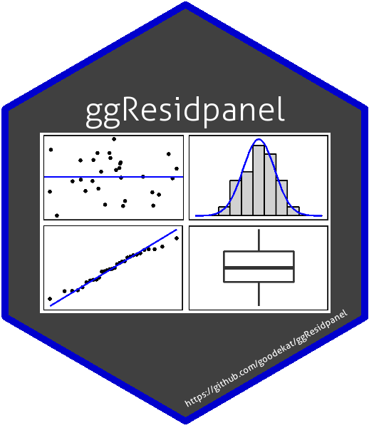
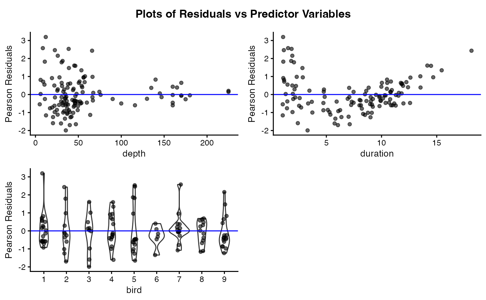
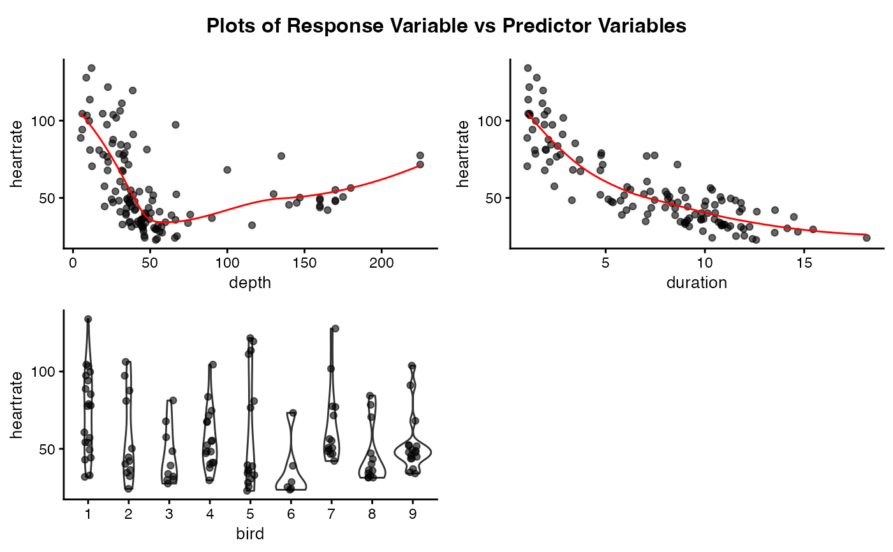

Panel of Plots of Residuals or Response Variable versus Predictor Variables.
resid_xpanel.RdCreates a panel of plots of the residuals or response variable versus the predictor (x) variables in the model. Interactions between predictor variables are not included. Currently accepts models of type "lm", "glm", "lmerMod", "lmerModLmerTest", "lme", and "glmerMod".
Usage
resid_xpanel(
model,
yvar = "residual",
type = NA,
smoother = FALSE,
scale = 1,
theme = "bw",
axis.text.size = 10,
title.text.size = 12,
title.opt = TRUE,
nrow = NULL,
jitter.width = 0,
alpha = 0.6,
return_plot_list = FALSE
)Arguments
- model
Model fit using either
lm,glm,lmer,lmerTest,lme, orglmer.- yvar
Specifies the variable to put on the y-axis of the plots. Options are "residual" (default) or "response".
- type
Type of residuals to use in the plot. If not specified, the default residual type for each model type is used. (See details for the options available.)
- smoother
Indicates whether or not to include a smoother on the plots. Specify TRUE or FALSE. Default is set to FALSE.
- scale
Scales the size of the graphs in the panel. Takes values in (0,1].
- theme
ggplot2 theme to be used. Current options are
"bw","classic", and"grey"(or"gray"). Default is"bw".- axis.text.size
Specifies the size of the text for the axis labels of all plots in the panel.
- title.text.size
Specifies the size of the text for the titles of all plots in the panel.
- title.opt
Indicates whether or not to include a title on the plots in the panel. Specify TRUE or FALSE. Default is set to TRUE.
- nrow
Sets the number of rows in the panel.
- jitter.width
Specifies the amount of jitter to add in the plots of categorical variables. (Default is 0.)
- alpha
Sets the alpha level for displays with points. Default is set to 0.6.
- return_plot_list
Indicates whether or not to return a list of individual plots. Specify TRUE or FALSE. Default is set to FALSE.
Value
A panel of plots of the residuals or response variable versus the predictor variables. Violin plots are included with categorical variables.
Details
Note that for x variables that are factors, the levels shown on the x-axis will be in the order that the levels are ordered in the dataframe. This can be adjusted by reordering the levels of the factor before the model is fit.
Examples
# Fit a model to the penguin data
penguin_model <- lme4::lmer(heartrate ~ depth + duration + (1|bird), data = penguins)
# Create plots of the residuals versus the predictor variables
resid_xpanel(penguin_model, theme = "classic", jitter.width = 0.1)

# Create plots of the response variable versus the predictor variables
resid_xpanel(
model = penguin_model,
yvar = "response",
theme = "classic",
smoother = TRUE,
jitter.width = 0.1
)
